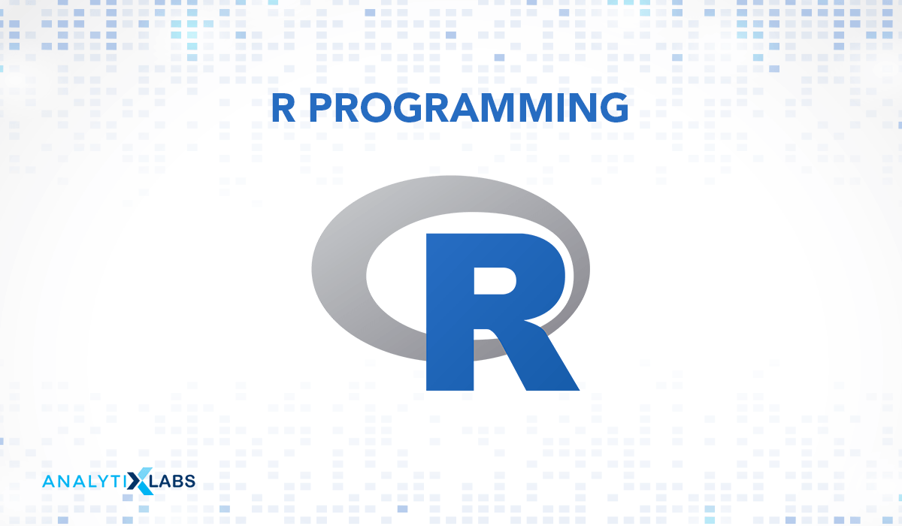
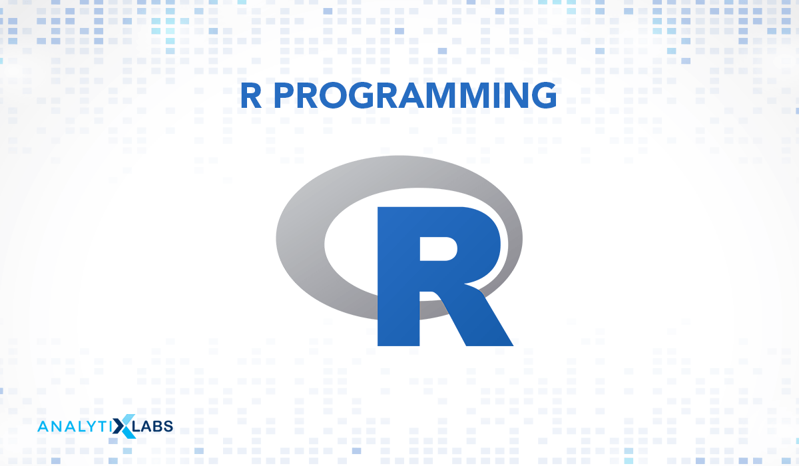

A Journey Towards Becoming a Data Engineer
I am determined to become a Data Engineer. This journey is my opportunity for personal growth and transformation. Despite life's challenges, I have never lost my passion for technology and data. When the chance to enter the world of data engineering arose, I seized it eagerly. Now, I am learning the ins and outs of data systems while discovering my potential and resilience.
In the tech industry, perseverance and continuous learning are crucial. I draw inspiration from those who have succeeded before me, knowing that with determination and hard work, I too can achieve greatness.
Linus Torvalds, the creator of Linux, once said: "In the long run, there's a tendency for things to balance out. If you're lucky at one moment, you'll be unlucky the next. But the key is to stay focused and keep moving forward, no matter the setbacks." These words resonate deeply with me.
I understand that the road to success is paved with both challenges and victories. By staying focused and maintaining forward momentum, I am confident that I can overcome any obstacle that comes my way. I remain deeply grateful for the opportunities before me. Becoming a Data Engineer is not just a career choice but a pathway to a brighter future.
It's my chance to not only redeem myself but to become a beacon of hope and inspiration for others who might be struggling to find their way. It's never too late to pursue your dreams and transform your life. With passion, hard work, and a bit of inspiration, anyone can turn their second chance into a remarkable journey of success.
Education/Academic Qualification
- Sicelosethu Secondary School, Dec 2016, Matric certificate
- University Of Limpopo,
Feb 2019 - incomplete, BSc in Mathematical and Computational Science - Umuzi Academy, May 2021 - Present, National Certificate in Information Technology (System Development) (SAQA ID 48872)
- Coursera, March 2023, Data Analytics (Google), Python, SQL for Data Science
Skills
 



Projects
Haven't worked on any projects
Contact Me
- Phone: 0768199714
- Email: sabelo.ndlovu@umuzi.org
- LinkedIn: Sabelo Remember Ndlovu